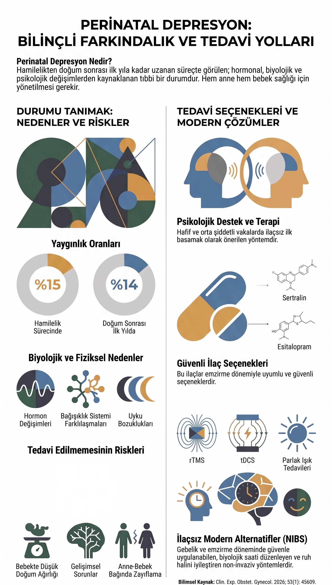

Hasta Bilgilendirme
Hamilelik Sırasında Depresyon ve Doğum Sonrası Depresyonu Tanıyalım
Gebelik ve doğum sonrası dönem, ruhsal açıdan kırılgan bir süreçtir. Bu dönemde ortaya çıkan depresyon belirtilerinin erken tanınması, hem anne hem bebek sağlığı açısından önemlidir. Aşağıdaki infografik, perinatal depresyonun nedenlerini, yaygınlığını, tedavi edilmediğinde ortaya çıkabilecek riskleri ve güncel tedavi seçeneklerini özetlemektedir.

Görseli büyütmek için tam boyutta açabilirsiniz.
Bu sayfadaki bilgiler yalnızca genel bilgilendirme amaçlıdır; tanı ve tedavi yerine geçmez. Gebelik ve emzirme döneminde ilaç kullanımına ilişkin kararlar, kişiye özgü fayda–risk değerlendirmesi gerektirir ve yalnızca hekiminizle birlikte alınmalıdır. Şikayetleriniz için mutlaka bir sağlık kuruluşuna başvurunuz.
← Ruh sağlığı hakkında bölümüne dön